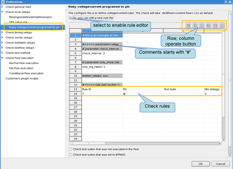
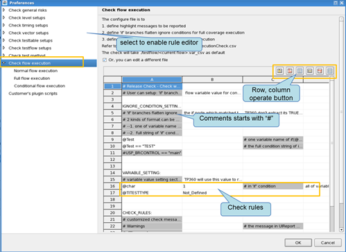
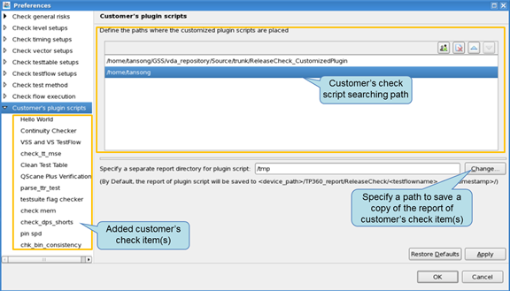

Preferences for the release check
Lets you customize the checking process for the items you want to check. Different items are associated with different preference pages.
Click the  icon for the item to be checked, the related preference page is opened.
icon for the item to be checked, the related preference page is opened.
Check general risks
Check HiZ risk
On its related preference page, you can configure the test suites to be checked and the pins, waveforms and level sets to be checked:
- Check Hiz risk in selected test suite types: all, functional
- Options related with "Pin driver without definitive drive status
- Check HiZ risk of missing level termination definition
- Check if iol and ioh are both set to zero
- Check HiZ risk of waveform with "no drive state, tri-state on (that is, FNZ), no compare or compare (that is, X).
- Option related with no wavetable defined for vector
- Check HiZ risk of using undefined waveform index(s) in vector
- Depth of vector cycles to check undefined waveform index(s) in vector: 100, 1000, 10000, all
- Option is related with standard HiZ behavior protection
- Check HiZ risk of missing termination and clamp definition for level set 0 on PS400(Only SmarTest version 6.3.6 or above)
Check for Hot-switching and clamp risk
On its related preference page, you can select and specify the criteria for reporting hot-switching risks.
Check for relay switching
On its related preference page, you can set up the criteria for reporting relay switching times risks.
- Check AC,DC and PPMU relay switching times is larger than limit
- Check utility line switching times is larger than limit
Specify the Pin relay switching times warning limit(Unit:times)
Specify line switching times warning limit(Unit:times)
Check risky voltage/current programmed to pins
On its related preference page, you can define the checking rules, such as:
- Or, you can specify a different file: Specifies another configuration file that
defines the voltage/current rules.
For format information of the configuration file, see CSV file for checking voltage/current risks.

- Check test suites that was not executed in the flow: Specifies whether to check the test suites that were not executed in the flow.
- Check test suites that was set to BYPASS: Specifies whether to check the test suites that have been set to BYPASS.
Check level setups
Missing/undefined/redefined pins
On its related preference page, you can choose if you want to check the missing/undefined/redefined pins in level setup.
DPS setup risk
On its related preference page, select if check the "ilimit" value of DPS pins, select if report setups of all DPS pins, and specify the limit value that the pin will be report risk if the "ilimit" value of the pin is larger than this specified value.
Check timing setups
Missing/undefined/redefined pins
On its related preference page, you can choose if you want to check the missing/undefined/redefined pins in timing setup.
Check vector setups
Missing/undefined/redefined pins
On its related preference page, you can choose if you want to check the missing/undefined/redefined pins in pattern setup.
Check test table setups
Validate test naming and numbering
On its related preference page, you can specify a configurable MIN/MAX limit of the length for the test suites name and test name to meet your checking requirements.
- test suite name < : The maximum length of the name of a test suite.
- test name < : The maximum length of the name of the test.
In addition, you can specify a configurable MIN/MAX limit of the range for the test number to meet your checking requirements.
- test number must be numeric : Test number must be numeric or not.
- test number <= : The biggest test number you can specify.
- test number >= : The smallest test number you can specify.
Check test method
Check memory leakage risks (take long time)
On its related preference page, you can specify whether to show the possible memory leakage risks reported by Valgrind or related to SmarTest APIs.
- Show 'possible' memory leakage risks reported by Valgrind
- Show 'possible' memory leakage risks related to SmarTest APIs
Check thread safe related risks (take long time)
On its related preference page, you can specify whether to show the possible thread safe risks related to SmarTest APIs.
- Show 'possible' thread safe risks related to SmarTest APIs
- Specify files as suppression files
Check testflow setups
Check System and flow flags
On its related preference page, you can specify whether to check some system or flow flags, such as:
- check flow flag parallel_mode
- check flow flag debug_analog
- check flow flag global_overon
- check flow flag test_number_enable
Check test suite flags
On its related preference page, you can specify whether to check some test suites flags, such as:
- check suites flag set pass
- check suite flag set fail
- check suite flag hold
- check suite flag hold on fail
- check suite flag pass value
- check suite falg fail value
- check suite flag per pin on pass
- check suite flag per pin on fail
Needless flow entries
- Chck unused testmethod link(s)(tm_xx)
- Check floating suite(s)
- Check bypass suite(s)
- Check bypass group(s)
- Check 'if(0)' branche(s)
Check bin consistency between flow and test table
On its related preference page, you can specify the checking rules, such as:
- Same softbin has different hardbins
- Same bin has different descriptions
- Bin is not defined in testflow but it is used in testtable
Check flow execution

Check with normal flow execution
On its related preference page, you can define the rules for flow execution:
- Or, you can specify a different file: Specifies another configuration file that
defines the checking rules.
For information on the format of the configuration file, see CSV file for flow execution.
- # of lines before and after highlight message to report : Specifies the number of lines before and after the highlighted message. These lines are included in the report.
- # of test flow execution : Times at which the testflow is executed.
- Attach generated UIReport in the report: Whether to attach the generated UI Report in the report.
- Attach generated testflow file in the report: Whether to attach the generated
testflow file in the report.Note It is only used in the full coverage of flow execution and conditional flow execution.
- Check test number conflict by analyzing event datalog
- Check invalid test number by analyzing event datalog
Check with full coverage of flow execution
Same as the check with normal flow execution.
Check with Conditional flow execution
Same as the check with normal flow execution.
Customers plug-ins scripts
The preference configuration of customer's plug-in check item will be placed under this node, and you can configure the preference on its related preference page.

See Customizing the release checker for details.
Functional changes
- Introduced in TP360 7.3.2
- TP360 3.10.4: Supports to specify valgrind suppression files of thread safe related risks.
- TP360 3.10.4: Supports to report setups of all DPS pins for DPS setup risks.